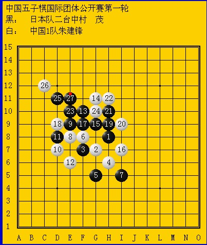

峡月开局，双方11之前都在摆定式，关键在于白棋致命的12手，黑13开始连续的VCT,一气呵成，漂亮的杀……
看到这个谱，我心里很无语，12手朱建锋是怎么想的？12就算走G9也会牵制下黑棋，不至于速败吧？为什么黑棋上方的VCT朱建锋没有算到？？？就算是业余棋手，也会隐约感觉到上面黑棋可以进攻出来，这一手12根本无法牵制上面黑棋的猛攻，这样的棋让人很无语！！！
作为职业棋手，不该犯如此低级的错误！
要是照这样下去，前程就险了，中国1队让人担忧！
［此帖子已被 山城刀客 在 2012-4-30 18:25:11 编辑过］
［此帖子已被 山城刀客 在 2012-4-30 18:37:00 编辑过］
［ 冰雪笑醉 于 2012-4-30 18:56:45 时花20金币送鲜花一朵］
［ 冰雪笑醉 于 2012-4-30 18:56:54 时花20金币送鲜花一朵］
［ 炫飞花样 于 2012-5-1 0:03:57 时花20金币送鲜花一朵］
［ 狼星 于 2012-5-1 0:35:12 时花20金币送鲜花一朵］
［ 于 2012-5-1 9:57:30 时花20金币送鲜花一朵］
［ 于 2012-5-1 9:57:33 时花20金币送鲜花一朵］
［ 于 2012-5-1 9:57:35 时花20金币送鲜花一朵］
［ 冰雪笑醉 于 2012-4-30 21:10:32 时花20金币送鲜花一朵］
［ 山城刀客 于 2012-5-1 0:24:16 时花20金币送鲜花一朵］
楼主不应该如此抨击小猪。在不熟悉山口变化的情况下，在不适应这样的时间赛制的情况下，在这样世界比赛的压力下，犯任何错误都是可以理解的。
楼主所说：“作为职业棋手，不该犯如此低级的错误！”而在实战比赛中，活三不挡，冲四不挡的例子已经很多了，更何况是在上述情况下漏算VCT呢？
多一些包容，少一些苛求！
［ 山城刀客 于 2012-5-1 0:23:44 时花20金币送鲜花一朵］
［ 山城刀客 于 2012-5-1 0:24:29 时花20金币送鲜花一朵］
［ 山城刀客 于 2012-5-1 0:23:58 时花20金币送鲜花一朵］
下午，一上线看到中国1队对日本比分1.5:2.5，一胜一和两输，处于不利位置，心里觉得有些郁闷，就发了这个贴，以泄心中不爽！其实，我也无意于针对朱建锋本人，在许多年前，他就是我尊敬崇拜的棋手了……
晚上看到1队比分有所回升，心里稍稍宽慰些了，期待明天精彩的比赛，也希望中国队能再接再厉取的好成绩！！！
白12，估计是错以为有个反?
看到更远的却漏了近的 可惜